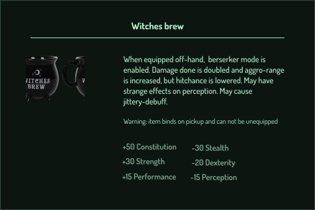
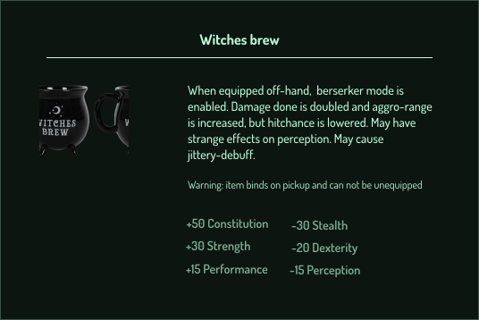

A different time
An interactive short story — made with Inklewriter, or rather being made — about a young woman's troublesome teenage years and young adulthood, set against the background of a rapid changing world in the 1940's and 50's. The story centers around choices and the road(s) not taken. I want to use this narrative to explore and highlight my own privileges (and those of my peers) in contrast to the social and economical restrictions of the previous generations.
Read the story so far
Office Wars
A few samples of item descriptions of a mini RPG game – "Office Wars" – I'm working on, which will feature characters totally not based on my current coworkers, such as:
Ice-man : Always too warm. Wants to sit next to, below, or preferably inside the airco. Wears shorts until mid-november.
Seductress : Prowls around the coffee machine, waiting for unsuspecting victims to start a conversation. Has 82 new pictures of her children at any point in time. Will relentlessly repeat the same weekend-story. Weakens your already non-existing willpower and makes sure you get no work done.
The Void : Helpdesk tickets disappear into thin air, e-mails are bounced back, is never to be found at his desk. Holds mystery knowledge of the Ancient Systems. Not even sure he's an actual employee anymore.
 

A highland heist
A branching choose-your-own-adventure style story following a French detective investigating a puzzeling crime in the Scottisch highlands. It is published on the "Sana stories" platform; a reading app for romantic and thrilling original stories, where you get to choose between multiple storylines and different endings.
Unfortunately, this is only accessible through a (free) app available for Android & Apple. Once installed, you can easily find the story via this link.

I do declare thee subpar
I was once so annoyed with a piece of fruit, I decide to expurge my disappointment and vexation through text. It was very catharthic. Make of that what you will.
Read